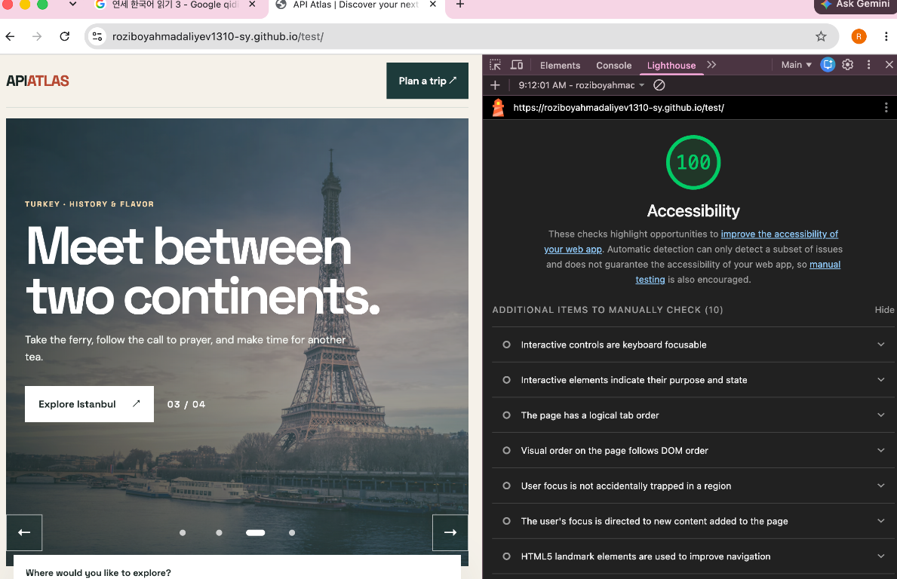

Team 9 · Web Programming · Gachon University
Accessibility Audit
Lighthouse accessibility review for the API Atlas group project.
Lighthouse Accessibility Score
100 / 100 · Clean score reported
The supplied Lighthouse screenshot shows a score of 100.
1. Audit overview
The team reports no accessibility violations in its initial and follow-up Lighthouse audits. The provided capture shows the API Atlas project running at the project page with a perfect accessibility score.
Testing note: Lighthouse automated checks cover only part of accessibility. The screenshot lists 10 items for manual review; those prompts are not, by themselves, reported failures.
2. Accessibility measures
- Semantic interactive elements: Native HTML buttons are used for interactive controls to support keyboard operation and assistive technology.
- Color contrast: Text and background colors were selected to meet the WCAG AA contrast target for normal text.
- Logical headings: Content uses a clear heading hierarchy to make sections easier to navigate.
- Image alternatives: Informative images have descriptive alternative text; decorative images use empty alt text.
3. Verification and testing
The team reports testing sequential keyboard navigation with the Tab key and confirming that focus indicators remain visible. Lighthouse was run for the Accessibility category; the supplied capture records a score of 100/100.
4. Lighthouse audit evidence

5. Conclusion
Building accessibility into the project from the beginning helped the team achieve the reported Lighthouse score of 100/100. Semantic HTML, keyboard access, readable contrast, and useful image alternatives support a more inclusive experience. Manual testing remains important alongside automated audits.